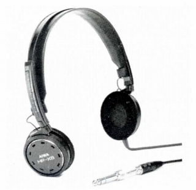
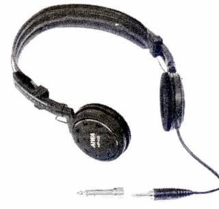

HP-X8


■価格 8,500円■型式 ダイナミック型■振動板 ■インピーダンス 40Ω■再生周波数帯域 5-25,000Hz■許容入力 200mW■感度 104dB/mW■コード 2.5ｍOFCリッツ ステレオ2ウェイプラグ■重量 100g(コード含まず）■発売 1984年10月■販売終了 1987〜88年頃■備考 サマリュウムコバルトマグネット使用フォームを充当したフラット振動板採用
アイワのインデックスへ